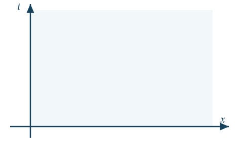

Matematika Advance • Teknik Sipil
Pendahuluan Persamaan Diferensial Parsial
Pertemuan 1: definisi, orde & linearitas, tiga persamaan fundamental, klasifikasi, syarat awal & batas
Mohammad Jamhuri
Di mata kuliah matematika sebelumnya, Anda sudah bertemu persamaan diferensial biasa, disingkat PDB.
Fungsi yang dicari, y, hanya bergantung pada satu variabel bebas, misalnya waktu atau posisi.
Hari ini kita naik satu tingkat. Fungsi yang dicari akan bergantung pada dua variabel bebas atau lebih.
Masalah nyata
Batang logam yang dipanaskan

Sebatang logam dipanaskan di salah satu ujungnya, sementara ujung yang lain tetap dingin.
Setelah beberapa saat, suhu di setiap titik batang berubah, dan perubahannya berbeda di setiap posisi.
Suhu bergantung pada posisi x dan waktu t sekaligus.
Karena u bergantung pada dua variabel, turunannya pun disebut turunan parsial.
ut berarti laju perubahan suhu terhadap waktu, pada posisi x yang tetap.
uxx berarti kelengkungan profil suhu terhadap posisi, pada waktu yang tetap.
Persamaan yang memuat fungsi banyak variabel beserta turunan parsialnya, itulah yang kita sebut Persamaan Diferensial Parsial, disingkat PDP.
Bagian satu
Mengenali PDP
Mari uji pemahaman ini dengan empat persamaan berikut.
Diskusikan dengan teman sebangku selama enam puluh detik. Mana yang PDP, dan mana yang bukan?
(a), (c), dan (d) adalah PDP, karena memuat turunan parsial terhadap dua variabel bebas atau lebih.
(b) hanya memuat turunan biasa terhadap satu variabel. Itu PDB, bukan PDP.
Bagian dua
Orde dan Linearitas
Orde sebuah PDP adalah orde turunan parsial tertinggi yang muncul di dalamnya.
Pada ut = k uxx, turunan tertinggi adalah uxx, turunan kedua. Jadi ordenya dua.
Sifat kedua yang penting adalah linearitas.
PDP disebut linear jika u dan seluruh turunannya berpangkat satu, tidak saling dikalikan, dan koefisiennya hanya bergantung pada variabel bebas.
Jika G sama dengan nol, persamaan disebut homogen. Jika tidak, disebut tak homogen.
Perhatikan ut = uxx + u2. Apakah ini linear? Berapa ordenya?
Ordenya dua. Tetapi persamaan ini tak linear, karena ada suku u2.
Mengapa linearitas begitu penting? Karena PDP linear homogen memiliki sifat istimewa, yaitu superposisi.
Bahkan jumlah tak hingga suku, ∑cnun, tetap merupakan solusi.
Awas: superposisi gagal untuk persamaan tak homogen, dan pada umumnya gagal total untuk persamaan tak linear.
Bagian tiga
Tiga Persamaan Fundamental
Dari sekian banyak PDP, tiga di antaranya muncul begitu sering sehingga layak dihafal.
k disebut difusivitas termal, c disebut laju rambat gelombang.
Ketiganya adalah PDP linear homogen orde dua, dan masing-masing mewakili satu kelas PDP yang berbeda wataknya.
Bagian empat
Klasifikasi PDP Orde Dua
Untuk PDP orde dua bentuk umum Auxx + Buxy + Cuyy + … = G, kita hitung sebuah angka penentu, yaitu diskriminan.
Jika diskriminan lebih besar dari nol, persamaan disebut hiperbolik.
Jika sama dengan nol, disebut parabolik.
Jika kurang dari nol, disebut eliptik.
Pada gelombang, utt − c2uxx = 0, diskriminannya 4c2, selalu positif. Hiperbolik.
Pada panas, ut − kuxx = 0, koefisien C sama dengan nol, sehingga diskriminannya nol. Parabolik.
Pada Laplace, uxx + uyy = 0, diskriminannya −4, negatif. Eliptik.
Tipe ini menentukan watak solusi: merambat, meluruh, atau tunak, sekaligus metode penyelesaian yang cocok.
Klasifikasikan (a): uxx + 4uxy + uyy = 0.
Diskriminannya 16 − 4, yaitu 12, lebih besar dari nol. Hiperbolik di mana-mana.
Sekarang (b): y uxx + uyy = 0. Perhatikan baik-baik, koefisiennya bergantung pada y.
Diskriminannya adalah −4y.
Untuk y positif, diskriminan negatif: eliptik.
Untuk y negatif, diskriminan positif: hiperbolik.
Pada y = 0, persamaan ini disebut persamaan Tricomi. Tipe sebuah PDP ternyata bisa berubah dari satu titik ke titik lain.
Bagian lima
Syarat Awal dan Syarat Batas
Persamaan Laplace uxx + uyy = 0 ternyata dipenuhi oleh banyak sekali fungsi.
PDB orde n cukup butuh n konstanta untuk memilih satu solusi. PDP butuh lebih banyak lagi, yaitu fungsi-fungsi sembarang.
Untuk memilih satu solusi yang fisis, kita perlu data tambahan: syarat awal dan syarat batas.
Syarat awal adalah keadaan sistem saat t = 0, sebanyak orde turunan waktu.
Syarat batas adalah perilaku di tepi domain, untuk setiap waktu t.

Bayangkan domain x dan t seperti ini. Batangnya terletak di sepanjang sumbu x, dan waktu berjalan ke atas.
Ada tiga jenis syarat batas yang paling sering muncul.
Dirichlet: suhu di ujung ditetapkan nilainya.
Neumann: fluks di ujung ditetapkan. Jika β = 0, ujung terisolasi sempurna.
Robin: pertukaran panas dengan lingkungan sekitar.
Ujung batang dicelupkan ke es batu. Syarat jenis apa? Bagaimana jika ujung dibungkus rapat dengan styrofoam tebal?
Es batu menahan suhu ujung tepat nol derajat. Itu syarat Dirichlet, u = 0.
Styrofoam mencegah aliran panas keluar. Itu syarat Neumann, ux = 0.

Inilah anatomi lengkap sebuah masalah nilai awal-batas. Alas berwarna oranye adalah syarat awal, kedua sisi tegak berwarna biru adalah syarat batas.
Itulah contoh rumusan lengkap sebuah masalah nilai awal-batas untuk persamaan panas.
Berapa banyak syarat awal yang dibutuhkan? Jawabannya bergantung pada orde turunan waktu.
Persamaan panas berorde satu dalam t, sehingga cukup satu syarat awal, yaitu suhu mula-mula f(x).
Persamaan gelombang berorde dua dalam t, sehingga butuh dua syarat awal: bentuk mula-mula f(x), dan kecepatan mula-mula g(x). Persis seperti hukum kedua Newton.
Persamaan Laplace sama sekali tidak memuat t, sehingga tidak perlu syarat awal. Cukup syarat batas di seluruh keliling domain.
Bagian enam
Masalah yang Terformulasi Baik
Jacques Hadamard mengusulkan tiga syarat agar sebuah masalah PDP disebut terformulasi baik.
Syarat pertama, solusinya ada.
Syarat kedua, solusinya tunggal.
Syarat ketiga, solusinya stabil: perubahan kecil pada data awal hanya menghasilkan perubahan kecil pada solusi.
Syarat ketiga inilah yang paling praktis, karena data hasil pengukuran selalu mengandung galat kecil. Kita ingin galat itu tidak meledak menjadi besar.
Sepanjang satu semester ini, kita akan membuktikan ketiga syarat itu untuk setiap masalah yang kita jumpai, bukan sekadar mempercayainya.
Penutup
Rangkuman Pertemuan 1
PDP adalah persamaan yang memuat fungsi banyak variabel beserta turunan parsialnya. Ordenya adalah turunan tertinggi yang muncul.
PDP linear homogen memiliki sifat superposisi, fondasi seluruh metode yang akan kita pelajari.
Tiga persamaan fundamental: panas, gelombang, dan Laplace.
Diskriminan B² − 4AC menentukan hiperbolik, parabolik, atau eliptik.
Solusi tunggal dipilih oleh syarat awal dan syarat batas.
Masalah yang baik adalah masalah yang solusinya ada, tunggal, dan stabil.
Minggu depan kita naik ke PDP orde satu dan metode karakteristik, Bab 2. Bawa intuisi tentang informasi yang mengalir.
Sampai jumpa di pertemuan berikutnya
Matematika Advance • Program Studi Teknik Sipil